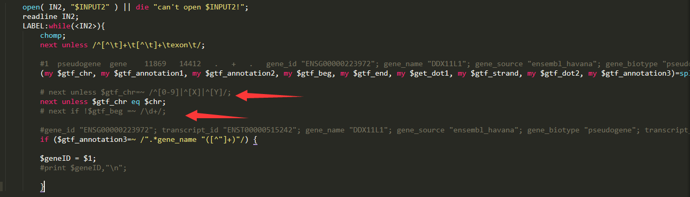
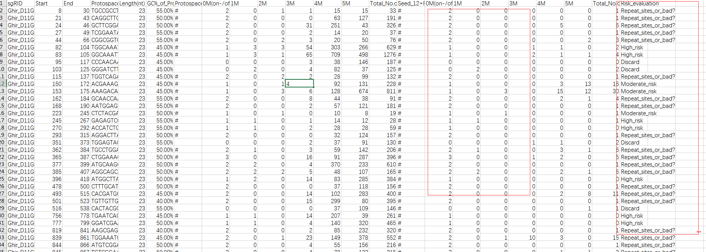
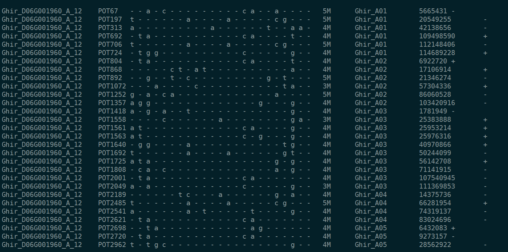
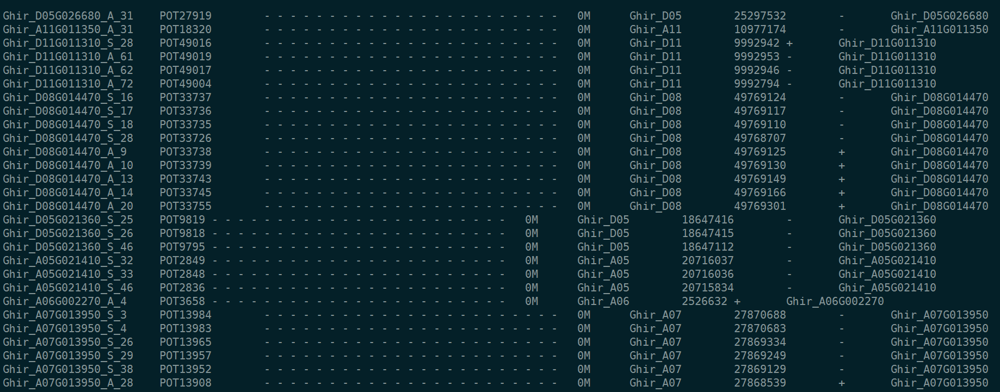

- 准备文件 基因组文件、基因的CDS文件、基因组注释的gtf文件
- 上述文件都需要放在sgRNAcas9软件目录
- 运行命令
perl sgRNAcas9_3.0.5.pl -i genome_cds.fa -x 20 -l 40 -m 60 -g genome.fa -o b -t s -v l -n 5
具体参数意义，参考RADME.txt文件
- 在输出文件夹中sgRNAcas9_report.xls为主要文件
- 接下来对sgRNA是否在对于的基因位置上进行验证；验证脚本在软件包Usefull_Script目录下的ot2gtf_v2.pl脚本
脚本中仍旧需要修改一下，由于正则表达式默认匹配的是人类染色体

输出文件中主要是看最后一列的风险等级，和结合0M、1M、2M等一起看

风险值：Discard > High_risk > moderate_risk > low_risk > repeat_sites_or_bad ? > Best
- 例如抓取Best等级的sgRNA编号对应的脱靶序列信息，与基因组的gtf文件进行比较看是否是命中对应基因

- 使用ot2gtf.pl运行之后得到对应的结果文件；判断第一列和最后一列基因id是否一致
在判断一个sgRNA是否对应同一个基因时，我使用 awk进行判断
当第一列与最后一列一样时，在最后输出0；否则输出1；最后将sgRNA编号对于的值相加就得到唯一靶标的sgRNA了

- 结果中同一个基因可能会有多个sgRNA对应了；这时就应该选择尽量靠近5‘端打靶的sgRNA了
- 最后就是获取到基因起始位点最短距离的sgRNA，并且去除3’端的NGG；然后加上接头就可以啦！
>Ghir_A01G001970_S_13
CCATCTGTTCTGACTTCCGCCGG
>Ghir_A01G001980_A_1
GCAACTCATTAACCCATCCGAGG
>Ghir_A01G002890_S_20
AGACGCAGATTACTCATCCTCGG
>Ghir_A01G005790_S_62
CATGGTTAACCCTCTCAAAAGGG
>Ghir_A01G006390_A_55
TGCTTAGAGACGAAGGATGTCGG
>Ghir_A01G007780_S_53
TGCCGCTATTTCTGGTACAGAGG
>Ghir_A01G008070_A_7
GTAGTCTTCAAAGCCTAAGGTGG
>Ghir_A01G009280_A_107
CATTGGGTAGCTTTGCAGCCAGG
>Ghir_A01G010790_A_2
GGCCTCTGCATCAAGAGACATGG